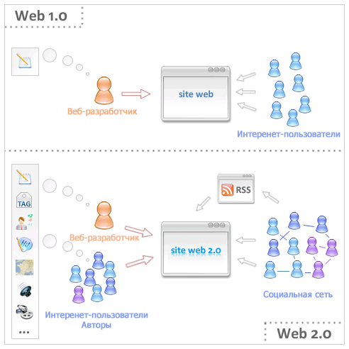
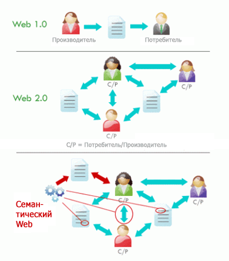

Общее определение

В данной статье затронуты проблемы определения таких терминов, как Web 2.0 и Web 3.0. Данные термины применяют как попытку обеспечить общее представление постоянно меняющейся среды Интернет. С целью определения и объяснения понятий Web 1.0, Web 2.0, Web 3.0 в Интернет, позаимствуем у директора W3C Тима Бернерс-Ли (Tim Berners-Lee) понятия о чтении-записи в Интернет.
Понятие Web 1.0, по утверждению Бернерс-Ли, можно рассматривать как "Интернет только для чтения". Иными словами, ранее Интернет позволял нам искать информацию и читать ее. Было очень мало путей для взаимодействия с пользователями или для участия в составлении содержания. Тем не менее, на первом этапе развития сети Интернет это было именно то, чего хотело большинство владельцев веб-сайтов: цель их сайта заключалась в том, чтобы обозначить свое присутствие в Интернете и сделать информацию о себе доступной для всех в любое время.
Корзины для покупок Web 1.0
Системы корзин для покупок, которые большинство владельцев веб-сайтов электронной торговли использует в некотором виде или форме, в основном подпадают под категорию Web 1.0. Общая цель заключается в представлении продукции для потенциальных клиентов, так же как это делает каталог или брошюра, только с веб-сайта вы можете также предоставить способ покупки продукции для любого пользователя в мире. Интернет обеспечил вектор для предоставления, и удалил географические ограничения.
В настоящее время мы наблюдаем стадию Web 2.0, или стадию "чтения-записи" Интернет, если мы будем придерживаться утверждения, описанного Бернерс-Ли. Введенная в Интернет способность внесения содержания и взаимодействия с другими пользователями в скором времени значительно изменит среду сети. Чтобы понять огромный потенциал днных изменений, достаточно посмотреть на YouTube и MySpace, которые опираются на публикуемый пользователями контент. Web 2.0 кажется долгожданным ответом на требования пользователей сети, Web 2.0 позволяет быть более вовлеченными в процесс создания информации, которая доступна пользователям.
Можество представлений Web 2.0
Существует огромное число определений того, что является "Web 2.0 приложением". Например, существует представление, что только потому, что сайт построен с использованием определенных технологий (таких как Ruby on Rails), или потому что он использует Ajax в интерфейсе, - это Web 2.0 приложение. Из главного, общего представления мы понимаем, что это не так. Наше определение требует, чтобы пользователи сами могли взаимодейстовать друг с другом, или делиться своим содеражанием. У разработчиков, к примеру, гораздо более жесткое определение Web 2.0, чем у средних пользователей сети, и это может привести к путанице.
В свою очередь, это приводит к неверному пониманию и понятия Web 3.0. Расширяя объяснения Тима Бернерса-Ли, Web 3.0 представляет Интернет как уже стадию "чтение-запись-выполнение". Однако, это трудно представить себе в абстрактной форме, так что взглянем на две вещи, которые будут основой семантической разметки и веб-сервисов Web 3.0.
Семантическая разметка относится к процессу коммуникации между Интернет-пользователем (человеком) и компьютеризированными программами. Одна из крупнейших организационных проблем представления информации в Интернет состоит в том, что веб-приложения не в состоянии обеспечить контекст для данных, и, следовательно, не могу понять, что имеет релевантность, а что нет. С помощью какой-то семантической разметки или форматов обмена данными, данные могут быть помещены в форму не только с помощью доступного для людей естественного языка, но и также способны быть хорошо понятыми и интерпретированными с помощью программных приложений. Под понятием "выполнение" мы и подразумеваем форматирование данных для понимания программными агентами, веб-сервисами.
Web 3.0 - семантический веб
Веб-сервис - это программная система, предназначенная для поддержки взаимодействия типа компьютер-компьютер через Интернет. Веб-службы – это не новинка, как правило, имеют форму Application Programming Interface (API). Популярный веб-сайт обмена фотографиями Flickr предоставляет собой веб-сервис, с помощью которого пользователи могут с помощью программного интерфейса искать изображения на Flickr. В настоящее время доступны тысячи веб-служб. Однако, в контексте Web 3.0, они получают большее внимание. Объединив семантическую разметку и веб-сервисы, Web 3.0 увеличивает потенциал для приложений, которые могут общаться непосредственно друг с другом и предоставлять более широкий поиск информации через простые интерфейсы.
От Web 1.0 к Web 3.0 - три десятилетия Интернет
Картинка стоит тысячи слов. С учетом сказанного, приведем следующие изображения для объяснения различий между Web 2.0 и Web 3.0 иначе известного как семантического веба. Но, прежде чем сравнивать Web 2.0 и Web 3.0, полезно сравнить с Web 1.0 Web 2.0 в первую очередь.


Таким образом, к концу первого десятилетия XXI в. можно рассматривать следующие этапы развития сети:
Web 1.0 — контент (содержание) интернет-ресурсов формирует сравнительно небольшая группа профессионалов, а подавляющее большинство пользователей сети Интернет фигурирует в качестве простых "читателей". В первом десятилетии сети Интерент, или Web 1.0, была разработана сама основа Интернет, которая позволила дать доступ к огромным объемам информации широкому кругу пользователей сети.
Web 2.0 — в создание контента активно включаются пользователи сети. Сейчас мы находимся в конце второго десятилетия - Web 2.0 - были развиты различные пользовательские интерфейсы, которые позволяли пользователям уже управлять содержимым сети Интерент и связаться друг с другом.
Web 3.0 — мы на пороге третьей декады - Web 3.0. Семантического Веб (Semantic Web). Семантическая паутина (Semantic Web) – «часть глобальной концепции развития сети Интернет, целью которой является реализация возможности машинной обработки информации, доступной во Всемирной паутине. Основной акцент концепции делается на работе с метаданными, однозначно характеризующими свойства и содержание ресурсов Всемирной паутины, вместо используемого в настоящее время текстового анализа документов» (Википедия).То есть - это некая сеть над Сетью, содержащая метаданные о ресурсах Всемирной паутины и существующая параллельно с ними.
Важно понимать, что, давая определения и используя понятия различных концепций построения сайтов Web 1.0, Web 2.0, Web 3.0, если сайт использует особенности Web 2.0, это не делает его устаревшим. В конце концов, у небольшого веб-сайта электронной торговли, пытающегося продать продукцию в какой-либо нише, возможно, нет никакой потребности в предоставлении содержимого пользователями или возможности взаимодействия пользователей друг с другом. Следует понимать, создание сайтов - дорогостоящий и времязатратный процесс, и, чтоб ваш Интерент-проект был удачен, уже на самых первых этапах проектирования, продумывания концепции сайта, важно четко знать существующие тенденции современных Интернет-технологий.
Очевидно одно: Интернет не перестает развиваться и будущее Интернет-технологий чрезвычайно интересно!